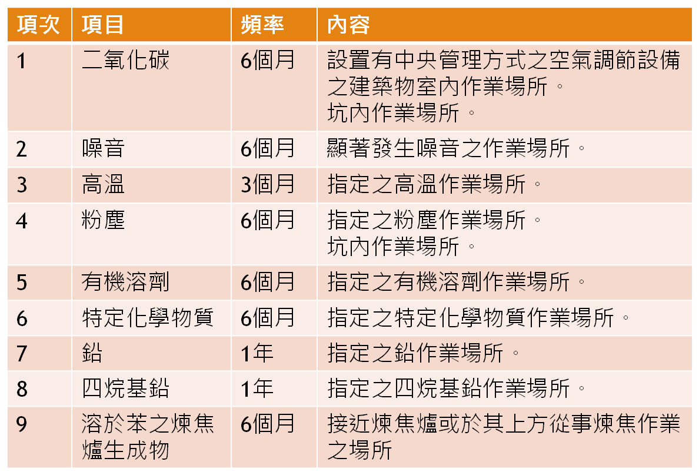
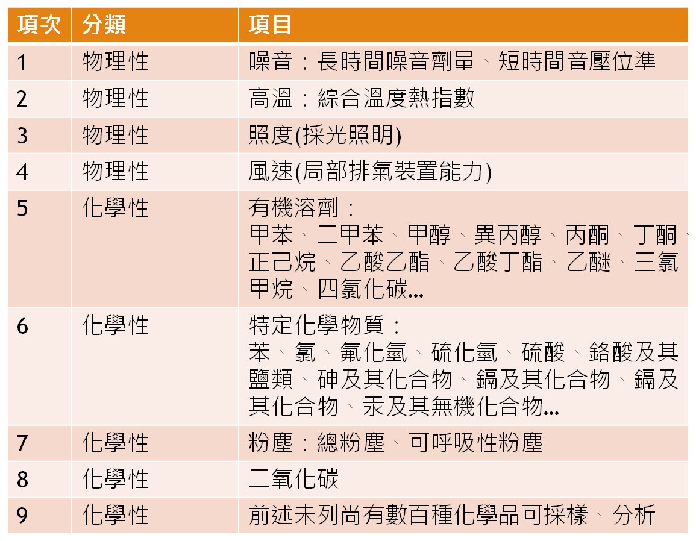

勞工作業環境監測
-
什麼是勞工作業環境監測？
-
為什麼要定期施實勞工作業環境監測呢？
-
不做會怎樣呢？
-
哪些場所必須實施作業環境監測？
-
常見之作業環境監測項目
指為掌握勞工作業環境實態與評估勞工暴露狀況，所採取之規劃、採樣、測定及分析之行為。
簡單的說，就是為了解勞工在作業場所健康危害的暴露狀況所作的一些工作。
職業安全衛生法第12條第3項：雇主對於經中央主管機關指定之作業場所，應訂定作業環境監測計畫，並設置或委託由中央主管機關認可之作業環境監測機構實施監測。
職業安全衛生法第43條：有下列情形之一者，處新臺幣三萬元以上三十萬元以下罰鍰：……二、違反……、第十二條第一項、第三項……。
本條文是立即處罰，並無改善機會。

